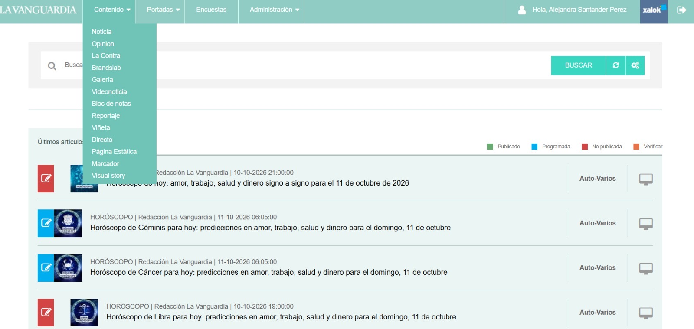
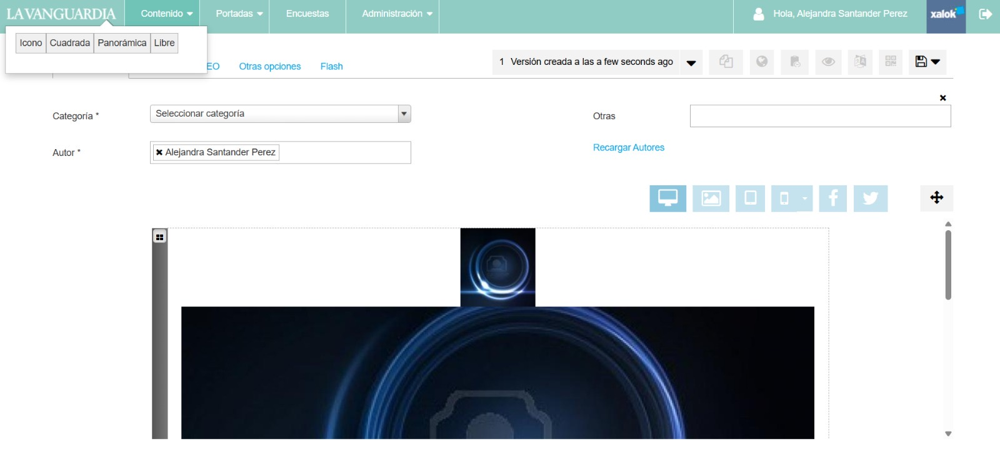
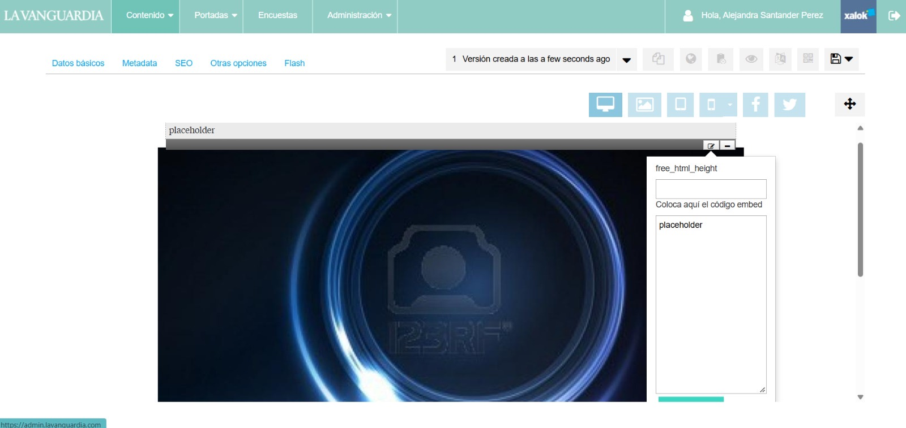

Contenidos HTML, de principio a fin
Una guía común para coordinar, entregar y publicar contenidos de Branded Content en los medios del grupo.
Soy PM
Qué pedir, qué revisar y cuándo está listo un contenido. Sin necesidad de leer código.
Ver el recorrido PM02 / ProducciónSoy proveedor
Qué entregar y cómo asegurar que la maqueta convive con la web del medio.
Ver entregas y requisitosUn proceso, dos formas de entregar
Comparar responsabilidadesBrief y materiales
Mockup y OK del cliente
URL externa y revisión
Xalok y comprobación final
La Vanguardia
Proceso de integración con capturas y criterios técnicos comprobados en contenidos del medio.
Consultar integración en LVMundo Deportivo
Comparte los criterios de entrega y revisión. Los pasos de su CMS y los ajustes de plantilla se documentarán por separado.
PróximamenteQué pedir y cómo llevar el proyecto
El PM prepara los materiales, canaliza el feedback del cliente y confirma las aprobaciones. El proveedor desarrolla la pieza y comprueba su funcionamiento.
Preparar un brief completo
Indica al proveedor en qué medio se publicará el contenido: La Vanguardia (LV), Mundo Deportivo (MD) o ambos. Entrega el objetivo, el formato, el público, los mensajes principales y las indicaciones del cliente. Añade los textos, imágenes, vídeos, logotipos, identidad de marca, créditos y enlaces necesarios. Identifica cualquier material provisional y acuerda cuándo llegará el definitivo.
Acordar alcance, calendario y responsables
Confirma quién diseña, quién maqueta y quién se encarga de integrar y programar en Xalok. La integración y la programación las realiza la misma persona. Acuerda las fechas de diseño, feedback, maqueta funcional y entrega final, el número de rondas incluidas y quién da el OK del cliente. Prevé aproximadamente 1–2 días entre la entrega final y la publicación para integrar, revisar y programar.
Validar el diseño antes de maquetar
Pide un diseño de la web, preferiblemente en Figma, con escritorio y móvil. Envía al cliente el enlace de visualización, recoge su feedback e intenta agrupar los cambios cuando el tiempo de ejecución lo permita. Solo se inicia la maquetación tras la aprobación del diseño y los contenidos de esa versión.
Revisar la maqueta funcional
El proveedor entrega una URL externa accesible al cliente. El PM compara la web con el diseño aprobado, prueba enlaces y contenidos y canaliza la revisión del cliente. Figma valida el diseño; esta URL permite comprobar la web funcionando.
Cerrar correcciones y aprobación
Los cambios pueden llegar en varios envíos. Intenta agruparlos antes de remitirlos al proveedor cuando el tiempo de ejecución lo permita, manteniendo claro qué está solicitado y qué está resuelto. Distingue errores de implementación de peticiones nuevas. Confirma el impacto en plazo y alcance antes de incorporar cambios sobre un diseño ya aprobado. Conserva el OK del cliente y la referencia de la versión final.
Preparar la integración y la salida
Indica el medio en el que se publicará el contenido —LV, MD o ambos— y facilita sección, titular y descripción SEO. Las palabras clave deben incluir siempre brl al final. Especifica si lleva streaming: cuando el contenido incluye un vídeo largo, se añade la palabra streaming o se selecciona la opción correspondiente en Xalok para evitar que la página se recargue automáticamente. Confirma la fecha con quien programa: la salida habitual es aproximadamente a las 05:50. El equipo o proveedor con acceso comprueba la integración en Xalok antes de programar.
Revisar después de publicar
Abre la URL final en móvil y escritorio, revisa los enlaces y el contenido y confirma la salida al equipo. Si hay incidencias, envía al responsable la URL, una descripción y una captura. La verificación técnica corresponde al proveedor o al responsable de integración.
Materiales para arrancar
| El PM entrega | Qué debe quedar claro |
|---|---|
| Brief y alcance | Objetivo, público, medio de publicación (LV, MD o ambos), formato, secciones de contenido y funcionalidades previstas. |
| Textos y enlaces | Documento con la última versión, jerarquía del contenido y destino de cada botón. |
| Material gráfico y audiovisual | Imágenes con calidad suficiente, vídeos o enlaces de reproducción, logotipos, referencias de marca y créditos. |
| Referencias y condiciones | Qué debe respetarse, qué evitar y qué materiales o funcionalidades son provisionales. |
| Calendario y aprobaciones | Fechas de entrega y feedback, rondas incluidas, interlocutor del cliente y responsables de diseño y desarrollo. Una misma persona integra y programa en Xalok, con aproximadamente 1–2 días de margen antes de publicar. |
Antes de dar el OK final
- Diseño y contenidos aprobados antes de maquetar.
- La URL externa abre para el cliente y muestra la última versión.
- Textos, marca, imágenes y créditos coinciden con lo aprobado.
- Botones, enlaces, vídeo y navegación funcionan en móvil y escritorio.
- No hay contenidos provisionales que aparenten estar terminados.
- Se dispone del medio de publicación, los datos SEO, las palabras clave con brl al final y la indicación de si lleva streaming.
- La integración en Xalok tiene responsable y ha sido revisada.
- Fecha de salida y revisión posterior asignadas.
Las palabras que encontrarás
| Término | Qué significa para el PM |
|---|---|
| Diseño / mockup | Propuesta visual de la web antes de programarla, habitualmente compartida desde Figma. |
| Maqueta funcional / preview externa | La web ya desarrollada en un enlace que el cliente puede abrir para revisarla. |
| HTML | El archivo de código que se integra en la noticia; no es el diseño de Figma. |
| CSS / JavaScript | Los estilos visuales y el comportamiento de la web. |
| Recursos o assets | Imágenes, vídeos, fuentes y archivos que necesita la pieza. |
| GitHub / GitHub Pages | El repositorio guarda archivos y versiones; GitHub Pages puede servir esos archivos mediante URLs públicas. |
| Xalok | El CMS desde el que el equipo autorizado integra y programa la noticia. |
| SEO / metas | Información editorial que se configura para identificar y describir la noticia. |
| Streaming | Configuración para contenidos con vídeo largo que evita la recarga automática de la página. Se añade la palabra streaming o se selecciona la opción en Xalok; brl permanece siempre al final de las palabras clave. |
| QA / revisión | Comprobaciones de contenido, diseño y funcionamiento. |
Primero el diseño, después la maquetación
El diseño permite acordar estructura, aspecto y experiencia antes de invertir en el desarrollo de la web.
Diseñar con el material del proyecto
Partir del brief y de los textos y recursos facilitados por el PM. Resolver la estructura, la jerarquía, las versiones de escritorio y móvil y el comportamiento previsto de elementos como capítulos, vídeos o menús.
Compartir un mockup en Figma
Se recomienda Figma para preparar el diseño y compartirlo con el cliente por medio del PM. Entregar un enlace de visualización o prototipo con acceso comprobado. Identificar la versión y explicar las interacciones que una imagen estática no puede mostrar.
Recoger feedback por rondas
El PM centraliza los comentarios del cliente y del equipo y resuelve indicaciones contradictorias. Puede haber varios envíos de cambios; se intenta agruparlos cuando el tiempo de ejecución lo permite. Para cada ronda se acuerdan fecha de respuesta y fecha de actualización; el número de rondas depende del alcance pactado.
Cerrar el diseño aprobado
El PM obtiene y conserva el OK del cliente sobre la versión concreta. El equipo de desarrollo recibe esa referencia, los recursos exportables y las indicaciones de comportamiento. Señalar de forma explícita cualquier material aún provisional.
Maquetar y revisar la web real
El proveedor desarrolla la pieza y publica una URL de prueba externa accesible al cliente. Se compara con el diseño aprobado y se revisan las interacciones reales. Una aprobación de Figma no sustituye la revisión de la web terminada.
Qué revisar en el diseño
- Estructura y orden de lectura claros, en escritorio y móvil.
- Textos reales o provisionales claramente identificados.
- Identidad del cliente, identificación comercial y créditos previstos.
- Destinos y estados de botones y enlaces: activo, seleccionado y próximamente cuando corresponda.
- Comportamiento de vídeo, navegación y animaciones explicado.
- Legibilidad, contraste y tamaños que faciliten la lectura.
- Recursos y tipografías identificados para la entrega a desarrollo.
Dos circuitos, la misma calidad de entrega
El proveedor utiliza su propio repositorio y proceso de desarrollo. La entrega debe permitir revisar, integrar y mantener la pieza sin reconstruirla.
Entrega del HTML
El proveedor entrega el index.html preparado para copiar y pegar. El PM o la persona interna designada integra y programa la noticia en Xalok.
El proveedor facilita una URL de prueba externa para que el PM y el cliente revisen la maqueta.
Entrega en Xalok
El proveedor integra el contenido y programa la noticia con su acceso al CMS, una vez recibido el OK y los datos necesarios del PM.
También entrega una URL externa para la revisión del cliente. La preview de Xalok se utiliza solo dentro del equipo con acceso.
| Trabajo | Entrega del HTML | Entrega en Xalok |
|---|---|---|
| Brief, textos y materiales | PM | PM |
| Diseño y sus revisiones | Responsable de diseño acordado; PM coordina al cliente | Responsable de diseño acordado; PM coordina al cliente |
| Aprobación del diseño antes de maquetar | Cliente, canalizada por el PM | Cliente, canalizada por el PM |
| Desarrollo y recursos en su repositorio | Proveedor | Proveedor |
| URL externa para revisión | Proveedor | Proveedor |
| OK de la maqueta funcional | Cliente, canalizado por el PM | Cliente, canalizado por el PM |
| Datos editoriales y de programación | PM | PM |
| Inserción en Xalok y programación | PM o persona interna designada | Proveedor con acceso |
| Comprobación técnica en Xalok | Responsable de integración; proveedor corrige su código | Proveedor; equipo valida el resultado |
| Revisión tras publicar | PM revisa contenido; responsable técnico verifica funcionamiento | PM revisa contenido; proveedor verifica funcionamiento |
En ambas modalidades, una misma persona integra y programa en Xalok. La entrega final debe prever aproximadamente 1–2 días para integración y revisión antes de la publicación.
Qué debe recibir el proveedor antes de empezar
El brief, los textos, los recursos, los enlaces, el alcance y el calendario salen del PM. Si falta material esencial, el proveedor debe señalarlo y acordar cómo afecta a la entrega. Antes de maquetar, debe disponer del diseño aprobado y sus indicaciones de comportamiento.
Consultar el ejemplo de HTML preparado para Xalok
Qué debe entregar el proveedor
- URL externa accesible con la última maqueta funcional y una referencia clara de versión.
- En la modalidad A, archivo HTML final listo para Xalok, sin que el PM tenga que adaptar rutas o separar etiquetas.
- En la modalidad B, integración revisada, confirmación de programación y URL final.
- Repositorio y carpeta del proyecto identificados, con los recursos definitivos publicados.
- Resumen de comprobaciones y aviso de cualquier incidencia o material sin cerrar.
- Instrucciones necesarias para mantener la pieza, incluidas dependencias si las hay.
- Contacto para las correcciones y la revisión de publicación.
Ficha de entrega recomendada
Es una ayuda, no un documento obligatorio. La información puede quedar en el README, en un correo o en el canal habitual, siempre que el equipo encuentre la versión final y las instrucciones necesarias.
Proyecto y medio de publicación (LV, MD o ambos):
Modalidad: entrega HTML / entrega en Xalok
Versión de diseño aprobada:
URL externa de la maqueta funcional:
Versión o fecha de entrega:
Repositorio y carpeta:
Archivo listo para Xalok (modalidad A):
Base pública de recursos:
Comprobaciones y notas de mantenimiento:
Incidencias o materiales por cerrar:
Responsable de integración y programación (misma persona):
Entrega final (prever 1–2 días para integrar y revisar):
Fecha de publicación (hora habitual: 05:50 aprox.):
Contacto para incidencias:
URL final y confirmación de programación (cuando estén disponibles):Libertad de herramientas. Entrega compatible
El código entregado debe funcionar en Xalok, ser mantenible y respetar el resto de la página. El equipo elige las herramientas y la estructura interna que mejor encajen con el proyecto.
01. Aislar la pieza
Usa un contenedor propio y selectores específicos. Este es un patrón de referencia; un aislamiento equivalente también es válido. No apliques resets globales ni alteres html o body para resolver problemas internos.
<div class="bc-proyecto" data-bc-project="proyecto">
<!-- Contenido de la pieza -->
</div>
<style>
.bc-proyecto { --bc-color: #b00000; }
.bc-proyecto *,
.bc-proyecto *::before,
.bc-proyecto *::after { box-sizing: border-box; }
.bc-proyecto img { max-width: 100%; height: auto; }
</style>Limita las búsquedas y modificaciones de JavaScript al contenedor. Evita variables globales y listeners innecesarios; no manipules módulos del medio.
(() => {
const root = document.querySelector('[data-bc-project="proyecto"]');
if (!root) return;
const buttons = root.querySelectorAll('[data-action]');
// Inicializar únicamente las interacciones de la pieza.
})();02. Entregar recursos que funcionen desde LV
Los src y href de recursos pegados en Xalok deben apuntar a su URL pública definitiva por HTTPS. assets/img/foto.webp en el HTML se resolvería desde la URL de la noticia, no desde el repositorio del proveedor.
Las rutas url(../img/fondo.webp) dentro de un CSS externo se resuelven respecto a ese CSS y pueden ser válidas. En JavaScript hay que comprobar cómo se resuelven las URLs dinámicas. Las anclas como #capitulo-1 son navegación interna, no rutas de archivos.
Cada proveedor utiliza su propio repositorio. No se debe copiar la ruta de otro proyecto como base de una pieza nueva.
03. Mantener el contenido accesible
- El contenido esencial permanece visible y usable si falla la animación o su dependencia.
- Respetar la preferencia de movimiento reducido y permitir navegación por teclado con foco visible.
- Utilizar botones para acciones y enlaces para navegación; dar nombres comprensibles a los controles.
- Describir imágenes informativas y marcar las decorativas con alt vacío. Dar título a los iframes.
- Revisar jerarquía de encabezados en el contexto final del medio, IDs únicos y contraste.
04. Probar scroll y cambios de altura
La publicidad, las fuentes, las imágenes y los módulos del medio pueden desplazar la pieza después de cargar. No bases el comportamiento en posiciones calculadas una sola vez. Prueba scroll rápido, anclas y entrada directa a una sección.
sticky, fixed y animaciones ligadas al scroll no están prohibidos: requieren prueba dentro de Xalok. Para reveals sencillos, IntersectionObserver es una opción; otras soluciones son válidas si cumplen las mismas condiciones.
05. Cuidar carga y mantenimiento
- Dimensionar y comprimir imágenes según su uso; evitar vídeo pesado con carga inmediata innecesaria.
- Eliminar librerías sin uso y evitar duplicaciones con recursos del medio.
- Si se utiliza un sistema de compilación, entregar los archivos finales que el navegador puede ejecutar y documentar cómo regenerarlos.
- No añadir medición, etiquetas o scripts de terceros sin coordinarlo con el equipo responsable.
Del HTML a la noticia en Xalok
Para el PM o la persona interna que integra una entrega HTML. También sirve como referencia para el proveedor que ya trabaja dentro del CMS.
1. Comprobar el HTML recibido
Descarga el archivo y, si viene en un ZIP, extrae el paquete completo. Haz doble clic en el HTML para abrirlo en el navegador y comprobar que se ve bien. Recorre la página y prueba los enlaces principales.
Esta comprobación local no sustituye la URL externa ni la prueba en Xalok. Si no carga algún recurso o comportamiento al abrirlo así, pide al proveedor que lo revise y confirme que el archivo entregado está preparado para integrar; algunas funciones necesitan servirse desde una URL web.
Para copiar el código, abre ese mismo archivo con un editor de texto o código —clic derecho y «Abrir con»—, selecciona todo y copia. No copies el contenido visible de la página desde el navegador.
2. Crear un contenido de tipo Visual story
En la cabecera correspondiente, abre el menú Contenido y elige Visual story para crear la nueva pieza.

3. Elegir la plantilla Libre
En las opciones de plantilla, selecciona Libre. Es la opción que permite insertar el contenido HTML de la pieza.

4. Pegar el código
Abre la edición del bloque HTML mediante el icono de edición situado en la parte superior derecha del bloque. En el panel, localiza «Coloca aquí el código embed», sustituye el texto de ejemplo por todo el código del archivo preparado por el proveedor y guarda el cambio.

El campo free_html_height no es el área para pegar el código. Si la entrega requiere un ajuste de altura, el proveedor debe indicarlo expresamente.
5. Completar sección, metas, palabras clave y streaming
Rellena los datos editoriales y la configuración de la noticia. Las pestañas superiores incluyen Datos básicos, Metadata, SEO y Otras opciones; comprueba que la información queda guardada en los campos correspondientes.
| Dato | Qué debe indicar el PM |
|---|---|
| Medio de publicación | La Vanguardia (LV), Mundo Deportivo (MD) o ambos. Este tutorial muestra la integración en LV. |
| Sección | La sección asignada a la noticia. |
| Titular y descripción SEO | Los textos definitivos para configurar las metas de la noticia. |
| Palabras clave | Las palabras acordadas, incluyendo siempre brl al final. |
| Streaming | Indicar si el contenido incluye un vídeo largo. En ese caso, añadir la palabra streaming o seleccionar la opción correspondiente en Xalok para evitar que la página se recargue automáticamente. Mantener siempre brl al final de las palabras clave. |
| Fecha de publicación | El día acordado. Hora habitual: aproximadamente las 05:50. |
Guarda la noticia y comprueba la URL final generada una vez completados estos datos. Confirma la cabecera, la sección y la terminación esperada con brl. Comunica la URL al PM y actualiza cualquier enlace del proyecto que deba apuntar a ella. Tener una URL generada no significa que la noticia ya esté publicada.
6. Revisar la integración dentro de Xalok
Abre la previsualización interna y recorre toda la pieza. Comprueba anchura, márgenes, tipografías, imágenes, vídeos, enlaces y comportamiento al hacer scroll, en móvil y escritorio. No envíes este enlace al cliente: no tiene acceso.
Si algo difiere del diseño aprobado o de la URL de prueba, envía la incidencia al proveedor. El PM no tiene que reparar el código. Después de cualquier corrección, sustituye el fragmento completo si el proveedor lo indica y vuelve a revisar.
7. Programar y comprobar la publicación
Con la aprobación final y los datos completos, programa el día acordado a las 05:50 aproximadamente y confirma la programación al PM. Tras la salida, revisa la URL publicada: contenido, enlaces, recursos y funcionamiento.
Referencia técnica para proveedores: fragmento y ajustes de LV
Qué contiene el fragmento
El patrón de integración incluye los recursos de estilos, el contenedor del contenido y el comportamiento de la pieza. Los ajustes del CMS se añaden solo si son necesarios. No se pega un documento completo con html, head y body dentro de otro documento.
<!-- Esquema orientativo: sustituir las URLs de ejemplo. -->
<link rel="stylesheet" href="https://example.com/proyecto/main.css">
<div class="bc-proyecto" data-bc-project="proyecto">
<!-- HTML aprobado -->
</div>
<script src="https://example.com/proyecto/scripts.js"></script>Identificar el artículo que contiene la pieza
En integraciones anteriores se comprobó que un identificador presente en la preview no existía en la página publicada. El patrón article.visual__story--free:has(.bc-proyecto) identifica el artículo por la raíz del contenido. Verifica siempre que coincida con el DOM real.
article.visual__story--free:has(.bc-proyecto) .container-fluid {
padding-left: 0 !important;
padding-right: 0 !important;
overflow: visible !important;
}
article.visual__story--free:has(.bc-proyecto) .row {
margin-left: 0 !important;
margin-right: 0 !important;
overflow: visible !important;
}
article.visual__story--free:has(.bc-proyecto) .visual-article-free.col-12 {
padding-left: 0 !important;
padding-right: 0 !important;
overflow: visible !important;
}
article.visual__story--free:has(.bc-proyecto)
.visual-article-free.col-12 > .content-free-html {
margin: 0 !important;
padding-left: 0 !important;
padding-right: 0 !important;
overflow: visible !important;
}
article.visual__story--free:has(.bc-proyecto) {
overflow: visible !important;
}Qué comprobar para cerrar la entrega
Una revisión visual del PM y una comprobación técnica del proveedor se complementan. Marca cada punto como correcto, pendiente o no aplicable en el informe de entrega.
Revisión de contenido · PM
Confirmar el OK del diseño, la revisión de la URL externa y la aprobación final del cliente antes de programar.
- Última versión aprobada de textos, imágenes, marca y créditos.
- Medio de publicación (LV, MD o ambos), sección, titular y descripción SEO y palabras clave terminadas en brl confirmados. Si hay un vídeo largo, streaming configurado para evitar la recarga automática.
- Fecha de salida acordada y programación habitual a las 05:50 aproximadamente.
- Todos los botones y enlaces comprobados; sin destinos provisionales activos.
- Contenido legible en móvil y escritorio, sin textos cortados.
- Vídeos e interacciones responden como espera el lector.
- Estado de capítulos publicados y próximos coherente.
Revisión técnica · Proveedor / integración
- CSS y JavaScript aislados; no alteran elementos del medio.
- Recursos cargan desde las URLs definitivas, sin 404 ni errores propios bloqueantes.
- Comprobado en anchuras de 375, 768, 1024 y 1440 píxeles.
- Sin desbordamiento horizontal accidental, solapamientos o imágenes deformadas.
- Scroll normal, scroll rápido, anclas y elementos sticky comprobados dentro de Xalok.
- Contenido esencial visible si falla JavaScript o una animación.
- Teclado, foco visible y movimiento reducido revisados.
- IDs, encabezados, textos alternativos y controles revisados.
- Revisión repetida en la URL publicada.
Cómo comunicar el resultado
| Estado | Qué significa | Acción |
|---|---|---|
| Error | Rompe el contenido, impide una acción esencial o afecta al medio. | Corregir antes de dar la pieza por lista. |
| Advertencia | Riesgo o pendiente que necesita una decisión. | Identificar impacto, responsable y resolución acordada. |
| Correcto | Comprobación realizada y superada. | Indicar entorno y versión revisados. |
| No comprobado | No se tuvo acceso o faltaban recursos para probarlo. | No presentarlo como correcto; asignar la revisión. |
Si una auditoría solo lee archivos, debe decirlo. No puede certificar responsive, consola, carga real o interacciones sin observarlos en ejecución.
Actualizar sin perder la versión aprobada
Primero identifica si el cambio está en el HTML de Xalok, en un recurso externo o en ambos.
| Cambio | Acción habitual | Qué verificar |
|---|---|---|
| Texto o enlace en el HTML integrado | Actualizar la fuente y el fragmento guardado en Xalok. | Que ambas versiones coincidan y el enlace final funcione. |
| CSS, JS, imagen o vídeo externo | Publicar la actualización en el alojamiento de recursos. | Que se sirva la nueva versión; revisar caché y páginas que comparten el archivo. |
| URL o nombre de un recurso | Actualizar la referencia donde se utiliza. | Puede requerir nuevo pegado de HTML, actualización de CSS o de JS. |
| Solo ajuste inline en Xalok | Actualizar el fragmento y conservar la versión final de entrega. | Que la próxima entrega no sobrescriba el arreglo. |
| Nueva funcionalidad o cambio de diseño | Actualizar los archivos afectados y repetir las pruebas pertinentes. | Integración real en Xalok y nueva revisión del resultado. |
Problemas habituales
En el servidor se ve bien, pero en LV faltan estilos o imágenes
Comprobar las URLs desde la página del medio, la publicación de recursos y las peticiones fallidas. Revisar rutas relativas del HTML y URLs construidas por JavaScript. Tener el archivo en GitHub no garantiza que su URL pública esté sirviéndose.
Aparecen márgenes o el sticky deja de funcionar
Inspeccionar los contenedores externos, sus paddings, márgenes y overflow. Aplicar solo el ajuste acotado que resuelva el problema. Verificar después que no se altera otro módulo. Consultar el patrón de referencia de LV.
Parte del contenido desaparece al hacer scroll
Revisar estados ocultos de animación, errores JavaScript y cálculos de posición. Probar scroll rápido y enlaces a secciones. El texto debe permanecer accesible aunque falle el efecto.
El cambio está subido, pero se sigue viendo la versión anterior
Verificar la URL exacta que utiliza la noticia y que la publicación de recursos haya terminado. Comprobar caché antes de volver a cambiar código. Si se versiona una URL, actualizar también su referencia.
Se duplican titulares o elementos del medio
Comprobar qué procede del HTML y qué añade la plantilla editorial. Coordinar la configuración correcta con quien gestiona Xalok. No ocultar elementos globales del medio con un selector genérico.
Una incidencia útil incluye
URL y versión, sección afectada, qué sucede, qué debería suceder, pasos para reproducirlo, dispositivo y navegador, y una captura o vídeo cuando ayude. En incidencias técnicas, añadir el error o recurso afectado.
Herramientas y prácticas útiles
Apoyos para diseñar, revisar y entregar contenidos que funcionen dentro del medio.
Descargar la plantilla y los archivos de ayuda
Diseño y feedback con Figma
Se recomienda Figma Design para preparar las versiones de escritorio y móvil y compartir el mockup con el cliente a través del PM. Mantén una referencia clara del diseño aprobado y comprueba los permisos del enlace antes de enviarlo.
Deja los comentarios vinculados a la sección correspondiente, intenta agruparlos cuando el tiempo de ejecución lo permita y explica las interacciones previstas. El prototipo ayuda a mostrar el recorrido, pero la web desarrollada se revisa después en su URL externa.
Prácticas que facilitan la entrega
| Práctica | Cómo aplicarla |
|---|---|
| Una versión de referencia | Identificar qué diseño está aprobado, qué URL muestra la última maqueta y qué HTML corresponde a la entrega. Evitar archivos finales con nombres ambiguos. |
| Preparar escritorio y móvil desde el diseño | Acordar el orden de lectura y la adaptación de módulos antes de maquetar. No reducir sin más la composición de escritorio. |
| Compartir assets listos para web | Entregar imágenes con el encuadre y calidad necesarios, dimensiones coherentes y nombres reconocibles. Mantener originales y exportaciones diferenciados. |
| Aislar cada proyecto | Usar un contenedor propio, CSS acotado y JavaScript que actúe solo dentro de la pieza. |
| Publicar recursos antes de integrar | Comprobar que las URLs definitivas de CSS, JS, imágenes y vídeos responden antes de pegar el HTML en Xalok. |
| Animar como mejora | El contenido debe poder leerse si falla el efecto. Revisar scroll rápido, anclas y movimiento reducido. |
| Revisar en el contexto real | Comparar la maqueta externa, la preview interna y la página publicada. Cada una puede tener un contexto distinto. |
| Conservar una versión recuperable | Antes de modificar recursos utilizados por una noticia publicada, guardar la versión anterior e identificar las páginas afectadas. |
| Documentar lo que importa | Anotar recursos, dependencias, versión, enlaces y cambios de mantenimiento. Un README breve puede evitar dudas al actualizar meses después. |
Cómo dar feedback útil
Indica sección, dispositivo, problema y resultado esperado. Por ejemplo: «En móvil, en la tarjeta del capítulo 2, el titular queda cortado; debe poder leerse completo». Añade captura y URL. Para cambios de contenido, entrega el texto nuevo completo y aprobado.
El PM prioriza las observaciones e intenta agruparlas cuando el tiempo de ejecución lo permite; el proveedor indica qué ha corregido y dónde revisar la nueva versión. Cerrar una ronda significa resolver sus puntos o dejar una decisión explícita sobre los restantes.
Editores de código
Opciones para abrir, revisar y desarrollar los archivos. La elección depende del equipo.
| Opción | Uso habitual | Web oficial |
|---|---|---|
| Visual Studio Code | Edición de HTML, CSS y JavaScript con extensiones. | Visual Studio Code |
| Sublime Text | Edición directa de archivos de texto y código. | Sublime Text |
| WebStorm | Entorno de desarrollo orientado a JavaScript y TypeScript. | WebStorm |
| Cursor | Edición de código con asistencia de IA. | Cursor |
Consulta las condiciones actuales en las webs oficiales. La asistencia de IA no sustituye la comprobación del código ni la prueba dentro del medio.
Plantilla y archivos de ayuda
Un ejemplo completo para preparar el fragmento HTML que se pega en Xalok, con documentación y comprobaciones reutilizables.
Todo lo necesario en un ZIP
HTML completo, imagen de ejemplo con URL absoluta, vista previa, estilos, script, guía de integración, checklist y reglas para asistentes.
Abrir la vista previa de la entrega
Descargas individuales
| Archivo | Para qué sirve | Descarga |
|---|---|---|
| ejemplo-xalok.html | Entrega completa: ajuste de LV, CSS, fuente pública, contenido y JS. Copiar todo el archivo al campo HTML de Xalok; sin html, head o body. | Descargar HTML |
| guia-integracion.md | Cómo leer y probar la entrega, qué copiar a Xalok y cómo separar los recursos en una entrega con alojamiento propio. | Descargar guía |
| checklist-xalok.md | Comprobaciones de entrega, aislamiento, recursos, responsive, accesibilidad y publicación. | Descargar checklist |
| reglas-para-asistentes.md | Instrucciones opcionales para adjuntar como contexto a un asistente de desarrollo, independientemente del editor. | Descargar reglas |
| ajustes-lv-opcionales.css | Reglas de referencia para wrappers de LV, comentadas. Activar solo lo necesario tras comprobar el DOM. | Descargar ajustes LV |
| assets/css/main.css | Copia de los estilos ya incluidos en el HTML. Útil para estudiar o externalizar el CSS sin duplicarlo. | Descargar CSS |
| assets/js/scripts.js | Script real del botón Abrir/cerrar todas las claves. Ya está incluido al final del HTML. | Descargar JS |
Una imagen con URL absoluta
La ilustración de la demo se carga desde GitHub Pages con una URL HTTPS completa en src. Busca composicion-editorial.svg en el HTML: incluye alt, width, height y carga diferida. El ZIP contiene también el archivo original. Para una pieza real, publica la imagen en el alojamiento del proyecto y cambia la URL por la suya.
Cómo usar el kit
Ver el resultado y abrir el código
Abre la vista previa y prueba los capítulos, los desplegables y el botón que abre todas las claves. Descarga ejemplo-xalok.html y ábrelo en un editor para ver el archivo que se entrega.
Reconocer las partes de la entrega
El orden es: style con ajuste de LV y estilos de la pieza, link a la fuente pública, div raíz con todo el contenido y script final. El CSS y el JS están incluidos para que la demo funcione sin alojar recursos por separado.
Copiar el archivo completo en una prueba de Xalok
Copia todo el código de ejemplo-xalok.html, desde style hasta el cierre del script. Pégalo en una Visual story con plantilla Libre y revisa el resultado. vista-previa.html es una página completa para navegador y no se pega en el CMS.
Preparar una pieza real siguiendo la misma estructura
Usa el diseño y los contenidos aprobados y una raíz exclusiva. Si separas CSS y JS, publícalos en tu alojamiento público y sustituye solo sus bloques por referencias absolutas. Comprueba los ajustes de wrappers en el CMS; usa los recursos publicados en el repositorio de cada proyecto.
Ver el código completo del ejemplo
<style>
/* Ajuste exclusivo de esta pieza en la plantilla Libre de LV.
Scope: article que contiene .bc-demo, tanto en preview como en publicada.
No depende de data-wf-page-id ni de un ID de noticia.
Verificar los wrappers reales al integrarlo. No aplicar a MD sin validación. */
article.visual__story--free:has(.bc-demo) > .container-fluid {
padding-left: 0;
padding-right: 0;
}
article.visual__story--free:has(.bc-demo) > .container-fluid > .row {
margin-left: 0;
margin-right: 0;
}
article.visual__story--free:has(.bc-demo) .visual-article-free.col-12 {
padding-left: 0;
padding-right: 0;
}
article.visual__story--free:has(.bc-demo)
.visual-article-free.col-12 > .content-free-html {
margin: 0 !important;
}
article.visual__story--free:has(.bc-demo) {
overflow: visible !important;
}
/* Estilos de la pieza incluidos para que esta entrega de ejemplo sea autocontenida. */
/* Estilos de la pieza de demostración: todo limitado a .bc-demo */
.bc-demo {
--bc-demo-red: #ff0000;
--bc-demo-ink: #403f3d;
--bc-demo-link: #ac0000;
box-sizing: border-box;
width: 100%;
color: var(--bc-demo-ink);
background: #fff;
font: 400 1rem/1.7 "Open Sans", Arial, sans-serif;
overflow-wrap: anywhere;
}
.bc-demo *, .bc-demo *::before, .bc-demo *::after { box-sizing: border-box; }
.bc-demo .bc-demo__wrap { max-width: 1160px; margin-inline: auto; padding-inline: clamp(20px, 5vw, 64px); }
.bc-demo .bc-demo__hero { background: #403f3d; color: #fff; padding-block: clamp(40px, 7vw, 88px); border-top: 8px solid var(--bc-demo-red); }
.bc-demo .bc-demo__eyebrow { font-size: .875rem; letter-spacing: .1em; text-transform: uppercase; margin: 0 0 20px; }
.bc-demo .bc-demo__title { font-size: clamp(2.3rem, 6vw, 4.5rem); line-height: 1.08; letter-spacing: -.04em; max-width: 850px; margin: 0 0 28px; }
.bc-demo .bc-demo__lead { font-size: 1.125rem; max-width: 730px; margin: 0 0 28px; }
.bc-demo a { color: var(--bc-demo-link); text-underline-offset: .2em; }
.bc-demo .bc-demo__cta { display: inline-block; background: #fff; color: #403f3d; padding: 12px 20px; border-radius: 4px; font-weight: 700; text-decoration: none; }
.bc-demo .bc-demo__cta:hover { background: #f1ebe7; }
.bc-demo :is(a, button, summary):focus-visible { outline: 3px solid #ad0000; outline-offset: 5px; }
.bc-demo .bc-demo__hero a:focus-visible { outline-color: #fff; }
.bc-demo .bc-demo__index { padding-block: 40px; }
.bc-demo .bc-demo__heading { font-size: clamp(1.6rem, 3vw, 2.1rem); line-height: 1.25; margin: 0 0 22px; }
.bc-demo .bc-demo__cards { display: grid; grid-template-columns: repeat(3, minmax(0, 1fr)); gap: 20px; list-style: none; padding: 0; margin: 0; }
.bc-demo .bc-demo__cards a { display: block; height: 100%; padding: 24px; border: 1px solid #d6d1ce; border-top: 3px solid var(--bc-demo-red); text-decoration: none; color: #403f3d; }
.bc-demo .bc-demo__cards a:hover { background: #fff4ef; }
.bc-demo .bc-demo__num { display: block; color: var(--bc-demo-link); font-size: .875rem; font-weight: 700; margin-bottom: 12px; }
.bc-demo .bc-demo__card-title { font-size: 1.25rem; font-weight: 700; }
.bc-demo .bc-demo__cards p { margin-bottom: 0; }
.bc-demo .bc-demo__chapter { padding-block: 42px; border-top: 1px solid #e0dbd7; scroll-margin-top: 100px; }
.bc-demo .bc-demo__chapter p { max-width: 780px; margin: 0 0 18px; }
.bc-demo .bc-demo__chapter details { max-width: 780px; border-left: 3px solid #ff0000; background: #f7f4f1; padding: 16px 20px; }
.bc-demo summary { cursor: pointer; font-weight: 700; }
.bc-demo .bc-demo__chapter details p { margin: 14px 0 0; }
.bc-demo .bc-demo__controls { margin: 28px 0 0; }
.bc-demo .bc-demo__toggle { border: 1px solid #403f3d; background: #fff; color: #403f3d; font: inherit; padding: 10px 18px; cursor: pointer; border-radius: 4px; }
.bc-demo .bc-demo__toggle:hover { background: #f4f1ee; }
.bc-demo .bc-demo__toggle[hidden] { display: none; }
.bc-demo .bc-demo__credits { background: #f4f1ee; padding-block: 24px; font-size: .875rem; }
.bc-demo .bc-demo__credits p { margin: 0; }
@media (max-width: 700px) { .bc-demo .bc-demo__cards { grid-template-columns: 1fr; } }
/* Sin animaciones ni scroll suave: no se introduce movimiento que reducir.
El contenido y los details siguen disponibles si el JS no carga. */
.bc-demo .bc-demo__figure{margin:40px auto}.bc-demo .bc-demo__image{display:block;width:100%;height:auto;border-radius:8px}.bc-demo .bc-demo__caption{font-size:.8125rem;line-height:1.5;color:#666360;margin-top:12px}
</style>
<!-- Recurso de fuente mediante URL absoluta pública; hay tipografías de respaldo. -->
<link rel="stylesheet" href="https://fonts.googleapis.com/css2?family=Open+Sans:wght@400;600;700&display=swap">
<!-- Contenido completo de demostración: sin clientes ni noticias reales. -->
<div class="bc-demo" data-bc-project="demo">
<header class="bc-demo__hero" aria-labelledby="bc-demo-title">
<div class="bc-demo__wrap">
<p class="bc-demo__eyebrow">Guía BC · Contenido de demostración</p>
<h2 id="bc-demo-title" class="bc-demo__title">Diseñar para entender</h2>
<p class="bc-demo__lead">Una buena experiencia empieza con una idea clara. Descubre tres claves para convertir información en un recorrido sencillo, legible y útil.</p>
<a class="bc-demo__cta" href="#bc-demo-capitulos">Explorar las tres claves</a>
</div>
</header>
<figure class="bc-demo__figure bc-demo__wrap">
<!-- URL HTTPS absoluta: funciona también al pegar el fragmento en Xalok.
En un proyecto real, sustituirla por la imagen alojada en su repositorio. -->
<img class="bc-demo__image"
src="https://brandedcontentgrupogodo.github.io/guia-bc/downloads/kit-xalok/assets/img/composicion-editorial.svg"
alt="Ilustración de una composición editorial adaptada a escritorio y móvil"
width="1600" height="900" loading="lazy" decoding="async">
<figcaption class="bc-demo__caption">Una misma idea, adaptada a cada pantalla · Ilustración de demostración de la guía BC</figcaption>
</figure>
<nav id="bc-demo-capitulos" class="bc-demo__index bc-demo__wrap" aria-label="Capítulos de la pieza">
<h2 class="bc-demo__heading">Tres claves para una buena experiencia</h2>
<ol class="bc-demo__cards">
<li><a href="#bc-demo-claridad"><span class="bc-demo__num">01</span><span class="bc-demo__card-title">Empezar por lo esencial</span><p>Dar prioridad a lo que el lector necesita comprender.</p></a></li>
<li><a href="#bc-demo-lectura"><span class="bc-demo__num">02</span><span class="bc-demo__card-title">Facilitar la lectura</span><p>Ordenar los contenidos para que se puedan recorrer.</p></a></li>
<li><a href="#bc-demo-accion"><span class="bc-demo__num">03</span><span class="bc-demo__card-title">Dar un siguiente paso</span><p>Ofrecer acciones comprensibles y destinos claros.</p></a></li>
</ol>
<!-- Se muestra solo tras inicializar correctamente la mejora JavaScript. -->
<div class="bc-demo__controls">
<button type="button" class="bc-demo__toggle" data-bc-demo-toggle
aria-controls="bc-demo-clave-1 bc-demo-clave-2 bc-demo-clave-3"
aria-expanded="false" hidden>Abrir todas las claves</button>
</div>
</nav>
<div class="bc-demo__wrap">
<section id="bc-demo-claridad" class="bc-demo__chapter" aria-labelledby="bc-demo-title-1">
<p class="bc-demo__num">CLAVE 01</p>
<h2 id="bc-demo-title-1" class="bc-demo__heading">Empezar por lo esencial</h2>
<p>Antes de dibujar una pantalla, conviene decidir qué debe llevarse el lector. Un mensaje principal ayuda a elegir el contenido, ordenar sus partes y dar a cada elemento el espacio que necesita.</p>
<p>Un titular concreto y una introducción breve permiten entender el propósito de la pieza desde el primer momento.</p>
<details id="bc-demo-clave-1" data-bc-demo-detail><summary>Una idea para ponerlo en práctica</summary><p>Escribe en una frase qué debería recordar el lector. Úsala como referencia al revisar la estructura de la página.</p></details>
</section>
<section id="bc-demo-lectura" class="bc-demo__chapter" aria-labelledby="bc-demo-title-2">
<p class="bc-demo__num">CLAVE 02</p>
<h2 id="bc-demo-title-2" class="bc-demo__heading">Facilitar la lectura</h2>
<p>La jerarquía visual ayuda a distinguir un título de una explicación y una idea principal de un detalle. Los párrafos breves y los espacios entre secciones hacen más fácil seguir el recorrido.</p>
<p>En móvil, el orden del contenido importa tanto como su tamaño. Una composición sencilla permite leer sin ampliar la pantalla ni buscar elementos fuera de ella.</p>
<details id="bc-demo-clave-2" data-bc-demo-detail><summary>Una idea para ponerlo en práctica</summary><p>Revisa la página en una pantalla estrecha. Comprueba que puedes seguir sus títulos y entender su estructura sin leer todavía todos los párrafos.</p></details>
</section>
<section id="bc-demo-accion" class="bc-demo__chapter" aria-labelledby="bc-demo-title-3">
<p class="bc-demo__num">CLAVE 03</p>
<h2 id="bc-demo-title-3" class="bc-demo__heading">Dar un siguiente paso</h2>
<p>Una acción útil explica qué sucederá al activarla. Los enlaces deben llevar a destinos coherentes con su texto y los botones deben responder a una tarea concreta.</p>
<p>La navegación por teclado y los estados de foco ayudan a que más personas puedan utilizar el contenido con comodidad.</p>
<details id="bc-demo-clave-3" data-bc-demo-detail><summary>Una idea para ponerlo en práctica</summary><p>Recorre todos los enlaces y botones. Comprueba su destino, su respuesta y si se entiende para qué sirven sin depender solo del color.</p></details>
<p><a href="#bc-demo-capitulos">Volver a las tres claves</a></p>
</section>
</div>
<footer class="bc-demo__credits"><div class="bc-demo__wrap"><p>Ejemplo técnico de la guía BC · Textos de demostración · Sin anunciante</p></div></footer>
</div>
<!-- Comportamiento de la pieza, aislado de los módulos del medio. -->
<script>
/* Interacción de ejemplo: abrir o cerrar todas las claves, sin actuar fuera de la pieza. */
(() => {
function init() {
const root = document.querySelector('[data-bc-project="demo"]');
if (!root || root.dataset.bcInitialized === 'true') return;
const button = root.querySelector('[data-bc-demo-toggle]');
const details = [...root.querySelectorAll('[data-bc-demo-detail]')];
if (!button || !details.length) return;
root.dataset.bcInitialized = 'true';
function update() {
const allOpen = details.every(detail => detail.open);
button.textContent = allOpen ? 'Cerrar todas las claves' : 'Abrir todas las claves';
button.setAttribute('aria-expanded', String(allOpen));
}
button.addEventListener('click', () => {
const shouldOpen = !details.every(detail => detail.open);
details.forEach(detail => { detail.open = shouldOpen; });
update();
});
details.forEach(detail => detail.addEventListener('toggle', update));
update();
button.hidden = false;
}
if (document.readyState === 'loading') {
document.addEventListener('DOMContentLoaded', init, { once: true });
} else { init(); }
})();
</script>